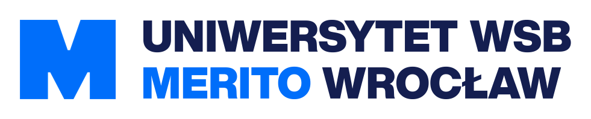

Bezpieczeństwo Aplikacji
Wykład 1: Krajobraz współczesnych zagrożeń, anatomia podatności i zautomatyzowane testowanie kodu
„Kochanie, czy nasz ekspres do kawy właśnie pinguje Chiny?”
Prawdziwy incydent opisany przez ITHardware: kiedy domowe AGD zaczyna żyć własnym życiem sieciowym
Absolutnie nie. Urządzenie zostało przejęte przez zautomatyzowane boty skanujące sieć i włączone w skład globalnego botnetu.
Raporty z lat 2025/2026 ujawniły ponad 150 popularnych aplikacji mobilnych (łącznie ponad 100M pobrań) z regułą
allow read: if true pozostawioną w środowisku produkcyjnym.Skutek: Publiczny wyciek milionów czatów, dokumentów tożsamości, haseł jawnym tekstem oraz kluczy do AWS/GitHub.
Luki Deep Links: Brak sanityzacji schematów URL w aplikacjach mobilnych pozwalał obcym witrynom przejmować sesje w tle.
Aplikacje desktopowe (komunikatory i narzędzia biurowe oparte na Electronie) rejestrują w systemie Windows/macOS protokoły typu
app://.Mechanizm podatności (klasa podatności CVE-2018-1000006 w protokołach URL): Wstrzyknięcie argumentów do Chromium (np.
--no-sandbox) przez spreparowany odnośnik webowy.Skutek: Kliknięcie linku na stronie www uruchamiało lokalną aplikację desktopową i wykonywało złośliwy kod na komputerze użytkownika.
CrowdStrike Falcon: Błąd walidacji pliku konfiguracyjnego w sterowniku doprowadził do BSOD na 8.5 mln maszyn (lotniska, banki, szpitale). Lekcja: brak testów kanarkowych i brak walidacji wejścia w komponencie krytycznym.
Atak Polyfill.io: Przejęcie domeny popularnej biblioteki JavaScript i wstrzyknięcie złośliwego kodu do ponad 100 000 serwisów internetowych.
Lista Grozy: 50 spektakularnych kompromitacji oprogramowania (2020–2026)
Rzeczywiste studia przypadków: od błędów autoryzacji w API i kompromitacji pamięci po zatruty łańcuch dostaw open-source
| # | Aplikacja / Usługa | Kategoria | Rok / Identyfikator | Wektor podatności & Mechanizm błędu | Skutki i skala incydentu |
|---|---|---|---|---|---|
| 01 | TikTok | Mobilne | 2022 / CVE-2022-28799 | 1-kliknięciowe przejęcie konta przez spreparowany Deep Link wywołujący nieautoryzowany WebView JS bridge | Kradzież sesji, podmiana wideo i dostęp do prywatnych wiadomości milionów kont |
| 02 | Mobilne | 2022 / CVE-2022-36934 | Integer overflow w bibliotece dekodowania wideo (Zero-Click RCE podczas nawiązywania połączenia) | Zdalne wykonanie kodu na smartfonie ofiary bez konieczności odbierania rozmowy | |
| 03 | Telegram (Android) | Mobilne | 2024 / CVE-2024-34475 | Błąd parsera plików ("EvilVideo"); spreparowany pakiet APK maskowany jako wideo z automatycznym podglądem | Pobranie i instalacja złośliwego oprogramowania na urządzeniu po 1 kliknięciu w czacie |
| 04 | Clubhouse | Mobilne | 2021 / API Scraping | Publiczny endpoint REST API pozbawiony limitu zapytań (Rate Limiting) i tokenów anty-botowych | Masowy scraping bazy 1.3 mln użytkowników, numerów telefonów i powiązań społecznościowych |
| 05 | Instagram (Meta) | Mobilne | 2023 / Błąd API 2FA | Brak limitu prób (rate limiting) na endpointach API weryfikacji 6-cyfrowego kodu SMS przy resetowaniu 2FA | Możliwość brute-force'u kodu weryfikacyjnego i przejęcia dowolnego profilu bez hasła |
| 06 | 23andMe | Mobilne / SaaS | 2023 / Credential Stuffing | Atak wypychania poświadczeń + funkcja "DNA Relatives" bez segmentacji uprawnień (BOLA) | Eksfiltracja danych genetycznych, pochodzenia etnicznego i genealogii 6.9 mln osób |
| 07 | Duolingo | Mobilne | 2023 / API Exposure | Publiczny endpoint API synchronizacji kontaktów dostępny bez uwierzytelnienia | Pobranie i wyciek bazy 2.6 mln kont powiązanych z realnymi adresami e-mail i telefonami |
| 08 | Strava | Mobilne | 2024 / Błąd anonimizacji | Globalna funkcja Heatmap i publiczne tablice segmentów biegowych ujawniające precyzyjne ścieżki GPS | Deanonimizacja tajnych placówek wojskowych w Syrii oraz tras biegowych ochrony przywódców państw |
| 09 | ParkMobile | Mobilne | 2021 / API Vulnerability | Brak autoryzacji w zewnętrznym API backendu aplikacji mobilnej | Kradzież bazy danych 21 mln kierowców: numery rejestracyjne, maile, telefony, hasła bcrypt |
| 10 | Signal (Android/iOS) | Mobilne | 2020 / CVE-2020-6514 | Błędy w parsowaniu strumieni WebRTC w silniku zestawiania połączeń | Potencjalne wycieki metadanych i anomalie pamięci w komunikacji peer-to-peer |
| 11 | Discord | Desktop | 2023 / Electron RCE | Ominięcie reguł contextIsolation i podatność odtwarzacza multimediów przez protokoły niestandardowe | Zdalne wykonanie kodu na maszynie gracza po kliknięciu linku ze spreparowanym protokołem |
| 12 | Slack Desktop | Desktop | 2023 / Session Token Theft | Przechowywanie nieszyfrowanych tokenów sesyjnych xoxc- w lokalnej pamięci podręcznej i błędy webhooków | Wykradzenie tokenów z lokalnych dysków i kradzież prywatnych repozytoriów kodu źródłowego |
| 13 | Zoom | Desktop | 2020 / CVE-2020-6109 | Wstrzyknięcie ścieżek UNC w oknie czatu + brak obiecywanego pełnego szyfrowania E2E | Kradzież skrótów NTLM użytkowników systemu Windows po najechaniu na odnośnik w trakcie spotkania |
| 14 | Microsoft Teams | Desktop | 2023 / CVE-2023-33215 | Błąd weryfikacji tokenów w integracji z kontami zewnętrznymi w kliencie desktopowym | Możliwość podszywania się napastników spoza organizacji pod wewnętrznych pracowników |
| 15 | AnyDesk | Desktop | 2024 / Supply Chain | Włamanie do systemów produkcyjnych i kradzież prywatnego certyfikatu podpisywania kodu źródłowego | Wymuszenie unieważnienia wszystkich certyfikatów i pilna aktualizacja binariów u milionów użytkowników |
| 16 | TeamViewer | Desktop | 2024 / Credential Compromise | Włamanie grupy APT29 z użyciem skompromitowanych poświadczeń pracownika korporacji | Nieautoryzowany dostęp do wewnętrznego środowiska IT producenta oprogramowania |
| 17 | Signal Desktop | Desktop | 2023 / Nieszyfrowana SQLite | Przechowywanie klucza deszyfrującego w jawnym pliku JSON obok bazy db.sqlite w katalogu profilu | Błyskawiczne odczytanie całej historii wiadomości po uzyskaniu lokalnego dostępu do systemu plików |
| 18 | Telegram Desktop | Desktop | 2024 / CVE-2024-31497 | Błąd obsługi skrótów i automatyczne uruchamianie archiwów Pythona (.pyz) maskowanych jako pliki wideo | Zdalne wykonanie złośliwego kodu na komputerze ofiary po kliknięciu pliku na czacie |
| 19 | KeePass | Desktop | 2023 / CVE-2023-32784 | Pozostawianie znaków hasła głównego w nieszyfrowanej pamięci procesu przez kontrolkę SecureTextBox | Odtworzenie pełnego hasła master ze zrzutu pamięci RAM (np. po ataku malware lub hibernacji) |
| 20 | WinRAR | Desktop | 2023 / CVE-2023-38831 | Błąd logiczny w obsłudze nazw rozszerzeń plików o identycznych nazwach katalogów w archiwum | Uruchomienie ukrytego skryptu .cmd/bat zamiast pliku graficznego PNG/JPG bez ostrzeżeń |
| 21 | LastPass | Web & SaaS | 2022/2023 / Lateral Movement | Przejęcie prywatnego komputera pracownika DevOps przez lukę w Plex, kradzież kluczy AWS IAM | Eksfiltracja produkcyjnych kopii zapasowych sejfów haseł milionów użytkowników i korporacji |
| 22 | Okta | Web & SaaS | 2023 / HAR Files Leak | Dostęp napastników do systemu ticketowego zawierającego niesanowane pliki sesyjne HTTP Archive | Kradzież aktywnych tokenów sesyjnych administratorów 100% klientów korporacyjnych Okty |
| 23 | CircleCI | Web & SaaS | 2023 / Infekcja stacji DevOps | Infekcja stacji roboczej pracownika trojanem kradnącym sesje 2FA i tokeny dostępu SSO | Kradzież sekretów CI/CD, tokenów AWS i certyfikatów produkcyjnych tysięcy firm technologicznych |
| 24 | Canva | Web & SaaS | 2020 / SQLi & BOLA | Luki weryfikacji tokenów OAuth i nieparametryzowane zapytania do bazy danych | Wyciek danych 139 mln użytkowników (nazwiska, maile, lokalizacje, skróty haseł) |
| 25 | Trello (Atlassian) | Web & SaaS | 2024 / API Exposure | Niezabezpieczony publiczny endpoint REST API /members/ pozwalający na odpytanie o dowolny e-mail | Eksfiltracja i sprzedaż bazy 15 mln kont powiązanych z publicznymi i prywatnymi profilami |
| 26 | Twitter / X | Web & SaaS | 2022/2023 / IDOR w API | Brak kontroli autoryzacji przy odpytywaniu mechanizmu synchronizacji kontaktów | Wyciek i publiczne opublikowanie bazy 200 mln użytkowników wiążącej profile z mailami |
| 27 | Dropbox Sign | Web & SaaS | 2024 / Skompromitowane API | Nieautoryzowany dostęp do systemu konfiguracji produkcyjnej i bazy kluczy API | Dostęp atakujących do szablonów prawnych, podpisów cyfrowych oraz kluczy uwierzytelniania |
| 28 | Atlassian Confluence | Web & SaaS | 2023 / CVE-2023-22515 | Broken Access Control na ścieżce /setup/* pozwalający na ponowne uruchomienie instalatora | Zdalne utworzenie nowego konta administratora bez żadnych poświadczeń i przejęcie bazy wiedzy |
| 29 | GitHub (OAuth Apps) | Web & SaaS | 2022 / Token Theft | Kradzież tokenów OAuth należących do aplikacji Heroku i Travis CI ze skompromitowanych baz | Pobranie zawartości prywatnych repozytoriów dziesiątek organizacji korzystających z tych narzędzi |
| 30 | Snowflake / Ticketmaster | Web & SaaS | 2024 / Credential Stuffing | Brak wymuszenia MFA na kontach analitycznych baz danych i brak mechanizmów detekcji anomalii | Wyciek danych 560 mln klientów Ticketmaster oraz milionów klientów banku Santander |
| 31 | Microsoft Exchange | Infra & Chmura | 2021 / ProxyLogon (CVE-2021-26855) | Podatność SSRF w połączeniu z niebezpieczną deserializacją w usłudze Exchange Web Services | Masowe, w pełni zautomatyzowane RCE na serwerach pocztowych korporacji i rządów na całym świecie |
| 32 | Microsoft Outlook | Infra & Chmura | 2023 / CVE-2023-23397 | Wstrzyknięcie zewnętrznej ścieżki UNC w polu dźwięku powiadomienia zadania kalendarza | Kradzież hashy NTLM użytkowników domenowych bez żadnej interakcji ofiary (Zero-Click) |
| 33 | Citrix NetScaler | Infra & Chmura | 2023 / Citrix Bleed (CVE-2023-4966) | Przepełnienie bufora pamięci w obsłudze OpenID Connect ujawniające tokeny sesyjne w nagłówkach | Ominięcie 2FA i przejęcie aktywnych sesji korporacyjnych na bramach dostępowych VPN |
| 34 | Ivanti Connect Secure | Infra & Chmura | 2024 / CVE-2024-21887 | Ominięcie uwierzytelniania na panelu webowym połączone z OS Command Injection | Pełny root shell na zaporach brzegowych i natychmiastowe wejście do sieci wewnętrznych |
| 35 | Fortinet FortiOS | Infra & Chmura | 2023 / CVE-2023-27997 | Przepełnienie sterty (Heap Overflow) w obsłudze portalu SSL VPN | Zdalne wykonanie kodu na firewallu bez wcześniejszego uwierzytelnienia |
| 36 | Plex Media Server | Infra & Chmura | 2022 / CVE-2020-5741 | Niezabezpieczona deserializacja obiektów w module ładowania wtyczek Pythona | RCE na serwerze domowym; kluczowy wektor wejścia do ataku na sieć administratora LastPass |
| 37 | Apache Guacamole | Infra & Chmura | 2020 / FreeRDP Flaws | Luki przepełnienia bufora w bibliotece obsługi protokołu RDP | Przejęcie bramy dostępowej przez złośliwy serwer RDP do którego łączył się użytkownik |
| 38 | F5 BIG-IP | Infra & Chmura | 2022 / CVE-2022-1388 | Błąd parsera nagłówków HTTP w interfejsie iControl REST (brak weryfikacji tożsamości) | Zdalne wykonanie poleceń w systemie Linux jako root bez podawania poświadczeń |
| 39 | SolarWinds Orion | Infra & Chmura | 2020 / SUNBURST | Wstrzyknięcie kodu trojana do oficjalnego instalatora podczas procesu budowania (MSBuild) | Infekcja 18 000 organizacji, w tym Departamentu Bezpieczeństwa Krajowego USA i Microsoftu |
| 40 | MOVEit Transfer | Infra & Chmura | 2023 / CVE-2023-34362 | Krytyczna luka SQL Injection w interfejsie webowym aplikacji bezpiecznego transferu plików | Masowa eksfiltracja poufnych baz danych setek korporacji, banków i agencji rządowych |
| 41 | XZ Utils (liblzma) | Łańcuch dostaw | 2024 / CVE-2024-3094 | Wieloletni atak socjotechniczny; ukrycie backdoora w testowych archiwach M4/tar | Próba modyfikacji weryfikacji klucza RSA w sshd w celu zdobycia uniwersalnego dostępu roota |
| 42 | Apache Log4j | Łańcuch dostaw | 2021 / Log4Shell (CVE-2021-44228) | Niezabezpieczona ewaluacja JNDI Lookup w formaterze logów komunikatów biblioteki | Masowe RCE na milionach serwerów po zalogowaniu ciągu tekstowego ${jndi:ldap://...} |
| 43 | Polyfill.io | Łańcuch dostaw | 2024 / Przejęcie domeny | Sprzedaż domeny popularnej biblioteki JavaScript podmiotowi trzeciemu i podmiana skryptu CDN | Wstrzyknięcie złośliwego kodu przekierowującego użytkowników na ponad 100 000 stron internetowych |
| 44 | CrowdStrike Falcon | Łańcuch dostaw | 2024 / Channel File 291 | Brak walidacji wejścia pliku definicji reguł i brak wdrożenia kanarkowego w sterowniku jądra | Błąd odczytu pamięci poza zakresem i natychmiastowy BSOD na 8.5 mln maszyn Windows |
| 45 | Colors.js & Faker.js | Łańcuch dostaw | 2022 / Sabotaż twórcy | Wprowadzenie nieskończonej pętli przez oryginalnego maintainera w proteście przeciw korporacjom | Paraliż potoków CI/CD i aplikacji w tysiącach projektów bazujących na ekosystemie Node.js |
| 46 | PyTorch (torchtriton) | Łańcuch dostaw | 2022 / Dependency Confusion | Zarejestrowanie w publicznym indeksie PyPI paczki o nazwie tożsamej z wewnętrznym modułem nocnym | Pobranie i uruchomienie złośliwego binarium wykradającego klucze SSH ze stacji badaczy uczenia maszynowego |
| 47 | Node-ipc | Łańcuch dostaw | 2022 / Protestware | Wprowadzenie kodu skanującego geolokalizację IP i nadpisującego pliki użytkowników z Rosji | Kryzys zaufania do pakietów npm i konieczność audytowania bezpośrednich zależności |
| 48 | Event-Stream | Łańcuch dostaw | 2018/współczesne echo | Przekazanie opieki nad porzuconym pakietem napastnikowi, który dodał zależność flatmap-stream | Dedykowany atak na kradzież portfeli Bitcoin w aplikacji Copay; klasyk ataku na łańcuch dostaw |
| 49 | Ledger Connect Kit | Łańcuch dostaw | 2023 / Kompromitacja npm | Kradzież konta byłego programisty przez phishing i wypuszczenie zatrutej wersji biblioteki | Podmiana adresów transakcji w setkach dApps i kradzież ponad 600 000 USD z portfeli krypto |
| 50 | ua-parser-js | Łańcuch dostaw | 2021 / Przejęcie konta dewelopera | Skompromitowanie poświadczeń do pakietu notującego 8 mln pobrań tygodniowo | Automatyczne pobieranie koparki kryptowalut i trojana kradnącego hasła przy instalacji |
To nie był ekspres do kawy. To był podatny serwer Linux.
Dlaczego napastnik nie przejmuje się tym, do czego urządzenie służy w kuchni
Iluzja twierdzy: Dlaczego firewall nie uratuje aplikacji?
Tradycyjne bezpieczeństwo obwodowe (Perimeter Security) w zderzeniu z nowoczesną siecią
• Założenie: Sieć wewnętrzna (LAN) jest bezpieczna, zewnętrzna (WAN) jest wroga.
• Na brzegu sieci stoi Firewall (zapora sieciowa L3/L4).
• Wystarczy zablokować nieużywane porty, a serwery wewnątrz mogą sobie bezgranicznie ufać.
Model całkowicie martwy we współczesnych architekturach.
• Porty 80 (HTTP) i 443 (HTTPS) muszą być z definicji otwarte na cały świat.
• Aplikacje to rozproszona siatka mikroserwisów, chmur publicznych, API i workerów.
• Ruch szyfrowany TLS: firewall brzegowy widzi jedynie strumień bajtów, nie rozumiejąc złośliwego ładunku w JSON.
Dlaczego celem numer 1 jest warstwa aplikacji (L7)?
Nikt nie łamie AES-256 brute-forcem. Atakuje się błędy w logice, łańcuch dostaw i kod generowany przez AI.
ID=15 nie powinien pobierać faktury użytkownika ID=16 (IDOR / BOLA).
| Skrót | Pełna nazwa angielska | Znaczenie techniczne w architekturze i audycie |
|---|---|---|
| L7 | Layer 7 (Application Layer) | Siódma warstwa modelu OSI (HTTP, WebSocket, gRPC). Tu przetwarzana jest logika biznesowa, autoryzacja i parsowanie danych użytkownika. |
| WAF | Web Application Firewall | Zapora aplikacyjna badająca ruch HTTP w poszukiwaniu znanych sygnatur ataków. Blokuje popularne exploity, ale nie weryfikuje praw dostępu w relacjach obiektowych. |
| IDOR | Insecure Direct Object Reference | Błąd autoryzacji horyzontalnej: aplikacja przyjmuje identyfikator z zewnątrz (np. ?id=123) i zwraca dane bez sprawdzenia, czy zalogowany użytkownik jest ich właścicielem. |
| BOLA | Broken Object Level Auth. | Nowoczesne określenie błędu IDOR w świecie interfejsów REST API (kategoria nr 1 w oficjalnym rankingu OWASP API Security Top 10). |
| ORM | Object-Relational Mapping | Warstwa abstrakcji nad bazą danych (np. SQLAlchemy, Hibernate, Prisma). Chroni przed klasycznym SQLi poprzez automatyczne zapytania parametryzowane. |
| CVE | Common Vulnerabilities & Exposures | Globalny słownik powszechnie znanych luk bezpieczeństwa. Każda zidentyfikowana luka otrzymuje unikalny identyfikator (np. CVE-2024-3094). |
| SBOM | Software Bill of Materials | Maszynowo czytelna lista (np. w formacie CycloneDX lub SPDX) wszystkich bibliotek, zależności tranzytywnych i modułów składających się na aplikację. |
| ReDoS | Regular Expression Denial of Service | Odmowa usługi spowodowana podatnym wyrażeniem regularnym, którego ewaluacja dla spreparowanego tekstu wymaga wykładniczej liczby operacji (backtracking). |
OWASP Top 10 (2025): Ewolucja zagrożeń
Kliknij w dowolny wiersz tabeli, aby zjechać do szczegółowej analizy technicznej podatności
| KOD | Kategoria OWASP 2025 | Esencja problemu technicznego | Szczegóły |
|---|---|---|---|
| A01 | Broken Access Control | Błędy kontroli dostępu (IDOR, BOLA), nieuprawniony dostęp do zasobów i endpointów, w tym SSRF. | Rozwiń ↓ |
| A02 | Security Misconfiguration | Domyślne hasła, publiczne buckety S3, zbędne otwarte porty, brak bezpiecznych nagłówków HTTP. | Rozwiń ↓ |
| A03 | Software Supply Chain Failures | Podatne, przestarzałe lub zainfekowane pakiety open-source w package.json / requirements.txt. |
Rozwiń ↓ |
| A04 | Cryptographic Failures | Nieszyfrowane dane w bazie, brak TLS, przestarzałe algorytmy hashowania haseł (MD5, SHA-1 bez soli). | Rozwiń ↓ |
| A05 | Injection | Wstrzyknięcia SQL, NoSQL, OS Command, XSS. Spadek pozycji dzięki ORM-om i silnikom UI z escapowaniem. | Rozwiń ↓ |
| A06 | Insecure Design & Pozostałe | Błędy w architekturze, słabe uwierzytelnianie (A07), brak spójności (A08), logi (A09), błędy (A10). | Rozwiń ↓ |
A05 Injection spadło, a A01 Broken Access Control dominuje? ORM-y automatycznie parametryzują zapytania SQL, ale żaden ORM nie wie sam z siebie, czy użytkownik ma prawo do edycji danego wiersza.Uwaga metodyczna: Pełna lista OWASP Top 10:2025 liczy 10 kategorii. Kategorie A06–A10 są w całości rozpisane i omówione w sekcji szczegółowej poniżej (przewiń w dół lub kliknij wiersz tabeli).
GET /api/faktury/105. Aplikacja pobiera fakturę bez walidacji relacji do sesji (IDOR/BOLA). Atak SSRF wymusza na serwerze odpytanie instancji metadanych chmury http://169.254.169.254/latest/meta-data/ i wyciek tokenów IAM.Obrona: Wymuszenie autoryzacji na poziomie bazy:
WHERE id = :id AND user_id = :user_id (scenariusz ten rozwiązujemy praktycznie w Zadaniu 8 projektu KrasnalShop) oraz blokowanie ruchu wychodzącego do sieci prywatnych.
HSTS, CSP), włączony tryb DEBUG na środowisku produkcyjnym ujawniający hasła w zmiennych środowiskowych.Obrona: Automatyczny hardening kontenerów, skanery IaC (Checkov, Trivy) oraz domyślne wyłączanie nieużywanych portów.
Obrona: Pliki lock z sumami kontrolnymi (
package-lock.json), automatyczne skanery SCA (pip-audit, Trivy, npm audit), podpisywanie kontenerów (Cosign).
Obrona: Wolne algorytmy pamięciożerne z unikalną solą: Argon2id (standard branżowy) lub bcrypt.
Obrona: Prepared Statements w ORM oraz silna polityka
Content-Security-Policy.
pickle.loads() w Pythonie (A08), brak logów zdarzeń uniemożliwiający reakcję na włamanie (A09) oraz ujawnianie ścieżek serwera w StackTrace (A10).
Modelowanie zagrożeń: Metodyka STRIDE
Jak psuć aplikację na tablicy, zanim napiszemy pierwszą linijkę kodu
X-Forwarded-For: 127.0.0.1 lub przesłanie tokenu JWT ze zmienionym nagłówkiem "alg": "none".Mitigacja: Weryfikacja podpisu asymetrycznym kluczem publicznym (RS256 / EdDSA) oraz wzajemne uwierzytelnianie mTLS pomiędzy usługami.
<input type="hidden" name="cena" value="999.00">. Atakujący zmienia wartość na 0.01 w konsoli DevTools.Mitigacja: Cena pobierana wyłącznie z zaufanej bazy serwera na podstawie ID produktu. Żadnych krytycznych danych biznesowych w ukrytych polach HTML!
Mitigacja: Niezmienne logi audytowe (WORM — Write Once, Read Many) przesyłane strumieniowo do zewnętrznego systemu SIEM.
/api/produkty?limit=1000000 powoduje wyczerpanie pamięci RAM serwera Node.js i zawieszenie aplikacji.Elevation: Przesłanie w JSON pola
{"role": "admin"} podczas rejestracji klienta (podatność Mass Assignment).Mitigacja: Sztywne limity paginacji (max 50 rekordów) oraz restrykcyjne DTO/szablony wejścia odrzucające nieautoryzowane pola.
Triada automatyzacji testów bezpieczeństwa
Ręczny audyt raz w roku to za mało. Jak automatyzować weryfikację w potoku CI/CD?
• Badanie kodu źródłowego bez jego uruchamiania (White-Box).
• Analizuje drzewo składniowe AST, wykrywa brak sanityzacji, niebezpieczne funkcje systemowe.
Narzędzia: Semgrep, SonarQube, Bandit
• Badanie działającej aplikacji z zewnątrz (Black-Box).
• Wysyła sfuzzowane żądania HTTP, sprawdza reakcję na wstrzyknięcia i konfigurację nagłówków.
Narzędzia: OWASP ZAP, Burp Suite, Nuclei
• Analiza drzewa zależności i kontenerów (SBOM).
• Porównuje wersje bibliotek z publicznymi bazami znanych podatności (CVE/NVD).
Narzędzia: Trivy, pip-audit, npm audit, Snyk
| Kryterium techniczne | SAST (Kod źródłowy) | DAST (Uruchomiony serwer) | SCA (Zależności open-source) |
|---|---|---|---|
| Perspektywa testu | White-Box (pełen dostęp do repozytorium) | Black-Box (brak wglądu w kod, tylko HTTP) | Manifest / SBOM (graf zależności) |
| Czy wymaga uruchomienia? | Nie (skanuje pliki tekstowe) | Tak (musi działać środowisko i baza danych) | Nie (analizuje pliki lock i obrazy Docker) |
| Pozycja w pipeline CI/CD | Pre-commit hook, etap Pull Request | Środowisko Staging / Test przed wydaniem | Etap Build / tworzenie obrazu kontenera |
| Czas wykonania skanu | Szybki (kilka do kilkudziesięciu sekund) | Wolny (od kilkunastu minut do kilku godzin) | Ekspresowy (od ułamka sekundy do kilku s) |
| Fałszywe alarmy (False Positives) | Średni / Wysoki (wymaga strojenia reguł) | Bardzo niski (weryfikuje realną odpowiedź HTTP) | Niski (bazuje na skatalogowanych numerach CVE) |
Narzędzia w akcji: Terminal DevSecOps
Komendy i konfiguracje, które włączymy do testów laboratoryjnych oraz pipeline'u CI/CD
Podejście Shift-Left: Ekonomia bezpieczeństwa
Dlaczego usunięcie luki w fazie pisania kodu jest 100 razy tańsze niż po wdrożeniu na produkcję
Linter lub wtyczka SAST w edytorze podświetla błąd. Programista poprawia go w 2 minuty przed wykonaniem commita.
Zautomatyzowany test blokuje merge. Wymaga ponownego uruchomienia pipeline'u, poprawki i powiadomienia zespołu.
Podatność wykryta w testach integracyjnych. Zgłoszenie ticketu w Jira, cofnięcie wydania wersji, ponowna regresja.
Incydent publiczny, wyciek bazy danych, zgłoszenie do UODO (kary RODO do 20M EUR), utrata reputacji, przestój.
| Faza wytwarzania (SDLC) | Narzędzie weryfikacji | Konsekwencje techniczne i biznesowe |
|---|---|---|
| Design & Coding | Modelowanie STRIDE, linery SAST w VS Code / JetBrains | Podatność eliminowana na tablicy projektowej lub przy pisaniu funkcji. |
| Pull Request (CI) | Semgrep CI, pip-audit, Trivy (Quality Gate) | Blokada wdrożenia z poziomu gita — kod podatny nie opuszcza repozytorium. |
| Produkcja (Runtime) | WAF, SIEM, bug bounty, audyty zewnętrzne | Późne wykrycie oznacza konieczność natychmiastowych hotfixów, audytu powłamaniowego i powiadomienia organów nadzorczych. |
Cztery filary Secure by Design
Zasady, które każdy projektant oprogramowania powinien traktować jak instynkt
Żaden proces, usługa ani użytkownik nie może posiadać większych praw niż absolutnie konieczne do wykonania zadania.
Dobre praktyki implementacji:
• Dyrektywa USER appuser w pliku Dockerfile (kontenery nigdy nie uruchamiają się jako root).
• Dedykowane konto bazy danych bez uprawnień DROP TABLE czy ALTER TABLE.
Bezpieczeństwo systemu nigdy nie może opierać się na pojedynczej linii obrony.
Dobre praktyki implementacji:
• Walidacja na frontendzie to wygoda dla usera (UX), nie bezpieczeństwo.
• Pełna walidacja w API + zapytania parametryzowane + uprawnienia na poziomie wiersza w bazie danych.
Każdy bajt pochodzący z zewnątrz jest traktowany jako potencjalnie złośliwy ładunek.
Dobre praktyki implementacji:
• Brak zaufania do nagłówków Origin, Referer czy ciasteczek.
• Twarde schematy walidacji wejścia (Pydantic w Pythonie, Zod w TypeScript) odrzucające niespodziewane pola.
Aplikacja w stanie domyślnym musi być bezpieczna bez konieczności dodatkowej konfiguracji.
Dobre praktyki implementacji:
• Domyślna odmowa dostępu (Deny by Default) w regułach autoryzacji.
• Ciasteczka z flagami HttpOnly; Secure; SameSite=Strict włączonymi natywnie w frameworku.
Od teorii do praktyki: Poligon KrasnalShop
Przechodzimy do środowiska warsztatowego i praktycznych zadań zaliczeniowych
• KrasnalShop: Dedykowana platforma e-commerce z celowo zaszytymi lukami logicznymi i technicznymi.
• Środowisko uruchamiane w Docker Compose — bezpieczna piaskownica do testowania ataków i obrony.
• 20 zadań problemowych obejmujących pełen cykl: od audytu logów serwera, przez analizę IDOR i SQLi, po tworzenie reguł SAST i łatanie kodu.
• Architekt i audytor: Nie tylko znajdujesz lukę, ale projektujesz architekturę odporną na całą klasę podobnych błędów.
• Automatyzacja: Budujesz automatyczne skanery weryfikujące kod przy każdym commicie (DevSecOps Quality Gate).
• Myślenie ofensywne i defensywne: Rozumiesz motywację atakującego, aby skutecznie zabezpieczyć zasoby biznesowe.
Materiały dydaktyczne i poligon laboratoryjny:
https://dev.zarnecki.org/Merito/bezpieczenstwo_aplikacji.git